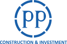

Pendahuluan
•
timer Estimasi: 00:45

Division of Human Capital Management & Corporate Learning
No. Reg: PP/HCCL/CERT/2026/0982
SERTIFIKAT KELULUSAN RESMI E-LEARNING
Diberikan secara sah kepada:
NIP: - • PT PP (Persero) Tbk
Telah menyelesaikan seluruh modul dan dinyatakan LULUS UJI PEMAHAMAN (KOMPETEN) Standard Operating Procedure:
Work Instruction Pelatihan (PP/SOP/E3-029 REV-2)
Mencakup Diagnosis Kebutuhan (RJPP/VRIO/TNA), Perancangan Modul & Expert, Integrasi Delivery LMS SiaPP, dan Pengukuran Dampak 3 Level.
Human Capital Corporate Learning
Sistem Manajemen Pembelajaran SiaPP
PT PP (Persero) Tbk
Dokumen Terverifikasi Digital
Selamat datang di Modul Work Instruction Pelatihan PT PP (Persero) Tbk...